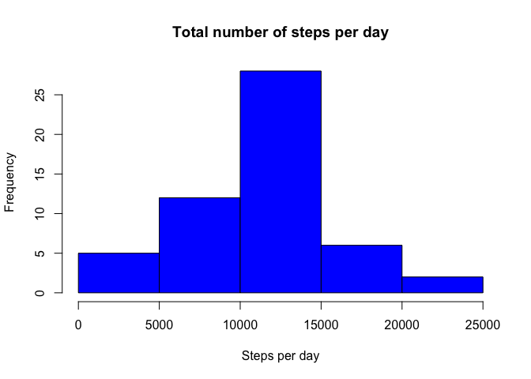
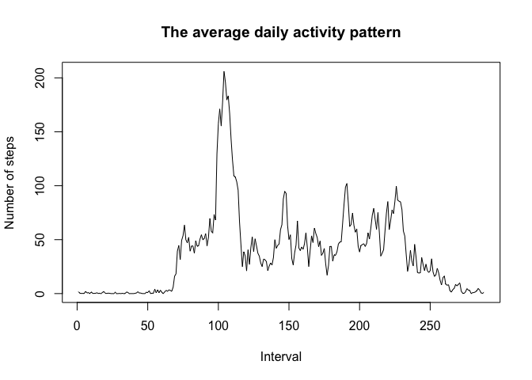
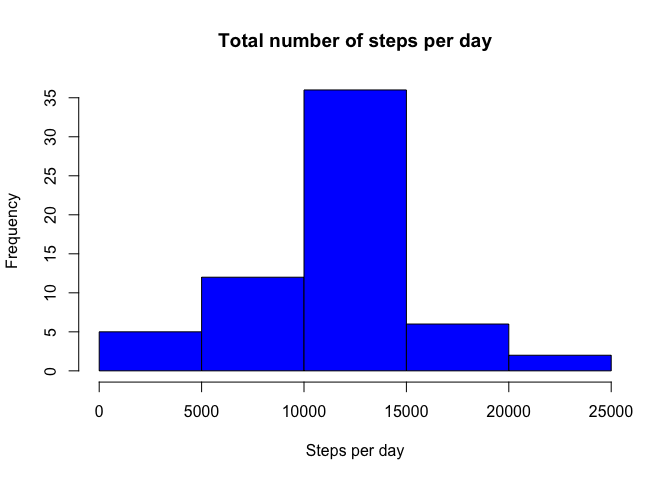
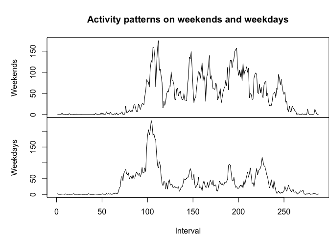

Setting up Global knitr options
library(knitr)
opts_chunk$set(echo = TRUE)activity <- read.csv("activity.csv", header = TRUE)Find the total number of steps taken per day
TotalStepsPerDay <- tapply(activity$steps, activity$date, FUN = sum)Plot histogram of the total number of steps taken per day
hist(TotalStepsPerDay, breaks = 6, main = "Total number of steps per day",
xlab = "Steps per day", ylab = "Frequency", col = "blue")
Compute the mean and median total number of steps per day
mean(TotalStepsPerDay, na.rm = TRUE)## [1] 10766.19median(TotalStepsPerDay, na.rm = TRUE)## [1] 10765Find the average number of steps taken per 5-minute interval
MeanStepsPerInterval <- tapply(activity$steps, activity$interval, mean, na.rm = TRUE)Make a time series plot of the 5-minute interval (x-axis) and the average number of steps taken, averaged across all days (y-axis)
plot(MeanStepsPerInterval, type = "l", main = ("The average daily activity pattern"),
ylab = "Number of steps", xlab = "Interval")
Find the 5-minute interval which, on average across all the days in the dataset, contains the maximum number of steps?
maxInterval <- which.max(MeanStepsPerInterval)
names(maxInterval)## [1] "835"Find the total number of missing values in the dataset
sum(as.numeric(is.na(activity$steps)))## [1] 2304Devise a strategy for filling in all of the missing values in the dataset. The strategy does not need to be sophisticated. For example, you could use the mean/median for that day, or the mean for that 5-minute interval, etc.
Create a new dataset that is equal to the original dataset but with the missing data filled in.
Make a histogram of the total number of steps taken each day and Calculate and report the mean and median total number of steps taken per day. Do these values differ from the estimates from the first part of the assignment? What is the impact of imputing missing data on the estimates of the total daily number of steps?
MeanStepsPerInterval_vec <- as.vector(MeanStepsPerInterval)
MeanStepsPerInterval_vec <- rep(MeanStepsPerInterval_vec, 61)
MeanStepsPerInterval_vec[!is.na(activity$steps)] = 1
stepsData_vec <- as.vector(activity$steps)
stepsData_vec[is.na(stepsData_vec)] = 1
activity_NoMissData <- activity
activity_NoMissData$steps <- MeanStepsPerInterval_vec * stepsData_vec
TotalStepsPerDay_NoMissData <- tapply(activity_NoMissData$steps, activity_NoMissData$date,
sum)
hist(TotalStepsPerDay_NoMissData, breaks = 6, main = "Total number of steps per day",
xlab = "Steps per day", ylab = "Frequency", col = "blue")
Find the mean and median total number of steps taken per day.
mean(TotalStepsPerDay_NoMissData)## [1] 10766.19median(TotalStepsPerDay_NoMissData)## [1] 10766.19The imputation has a slight impact on the median total number of steps taken per day. It was changed from 10765 to 10766.19
The mean total number of steps taken per day remained the same.
# Create a factor variable with two levels (weekday, weekend)
temp <- as.POSIXlt(activity$date, format = "%Y-%m-%d")
WeekDay <- temp$wday
WeekDay[WeekDay == 0] = 0
WeekDay[WeekDay == 6] = 0
WeekDay[WeekDay != 0] = 1
WeekDays_Factor <- factor(WeekDay, levels = c(0, 1))
activity$WD <- WeekDays_Factor
#Calculate the mean
MeanStepsPerWeekday <- tapply(activity$steps, list(activity$interval, activity$WD), mean,
na.rm = T)par(mfrow = c(2, 1))
# Display the two plots
with(activity, {
par(mai = c(0, 1, 0.8, 0))
plot(MeanStepsPerWeekday[, 1], type = "l", main = "Activity patterns on weekends and weekdays",
xaxt = "n", ylab = "Weekends")
par(mai = c(0.8, 1, 0, 0))
plot(MeanStepsPerWeekday[, 2], type = "l", xlab = "Interval", ylab = "Weekdays")
})